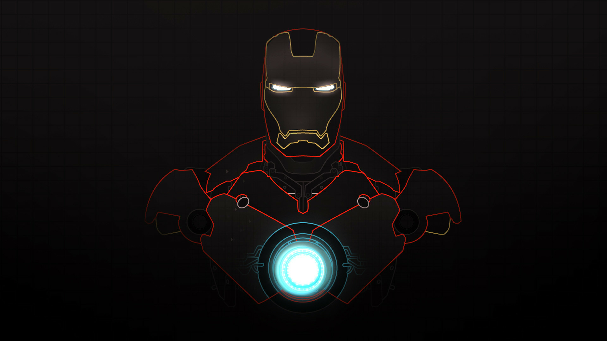

Un multimillonario, empresario e ingeniero, Tony Stark sufre una lesion en el pecho durante un secuestro el que sus captores tratan de obligarlo a construir un arma de destruccion masiva. El crea en su lugar una poderosa armadura para salvar su vida y escapar de su cautiverio. luego utiliza la armadura para protejer al mundo como Iron Man. Atravez de su corporacion -industrias Stark-Tony a creado muchas armas militares, algunas de las cuales, junto con otros dispocitivos tecnologicos de su invencion, se han integrado en su armadura, ayudandolo a luchar contra el crimen.
Iron Man ha hecho apariciones menores en series animadas como:
- los 4 fantasticos(serie animada)
- El increible hulk.
- Los vengadores.
- Los cuatro fantasticos: Los grandes heroes del mundo.
- Spiderman(serie de televicion.
SABER MAS
islas sanchez luis angel